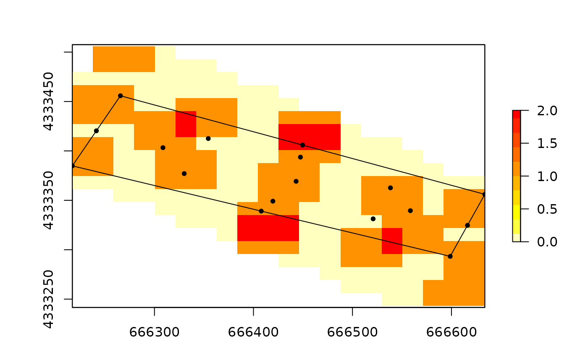

Do the reduction of targets.
uav.DoReduction(intargets, insize = 15)SpatialPointsDataFrame with the location of targets to reduce
not used so far.
A list with polygons, points and sminos with the reduced target locations.
library(goal)
data(goaldata.data2)
one = goal::uav.GenerateTargets(goaldata.data2)
#>
#> uav.GenerateTargets: reprojecting 'data2' to: '+init=epsg:2100'. I continue.
#> Warning: GEOS support is provided by the sf and terra packages among others
#> Warning: GEOS support is provided by the sf and terra packages among others
#> Warning: GEOS support is provided by the sf and terra packages among others
#> Warning: GEOS support is provided by the sf and terra packages among others
#> Warning: spgeom1 and spgeom2 have different proj4 strings
#> Warning: GEOS support is provided by the sf and terra packages among others
#> Warning: GEOS support is provided by the sf and terra packages among others
result = uav.DoReduction(one, insize=20)

print(result)
#> coordinates x y type id
#> 1 (666419.6, 4333333) 666419.6 4333333 Polygons Centroids 1
#> 11 (666308.6, 4333421) 666308.6 4333421 Polygons Centroids 2
#> 12 (666447.5, 4333406) 666447.5 4333406 Polygons Centroids 3
#> 13 (666558.5, 4333318) 666558.5 4333318 Polygons Centroids 4
#> 14 (666443.1, 4333366) 666443.1 4333366 Intersections 5
#> 15 (666217, 4333391) 666217.0 4333391 Koryfes 6
#> 2 (666265.6, 4333506) 666265.6 4333506 Koryfes 7
#> 3 (666633.7, 4333345) 666633.7 4333345 Koryfes 8
#> 4 (666598.7, 4333243) 666598.7 4333243 Koryfes 9
#> 16 (666330.1, 4333379) 666330.1 4333379 Line Centers 10
#> 111 (666538.4, 4333355) 666538.4 4333355 Line Centers 11
#> 121 (666354.4, 4333436) 666354.4 4333436 Line Centers 12
#> 131 (666520.9, 4333305) 666520.9 4333305 Line Centers 13
#> 17 (666241.3, 4333449) 666241.3 4333449 Boundaries Ceners 14
#> 21 (666407.9, 4333317) 666407.9 4333317 Boundaries Ceners 15
#> 31 (666449.7, 4333425) 666449.7 4333425 Boundaries Ceners 16
#> 41 (666616.2, 4333294) 666616.2 4333294 Boundaries Ceners 17